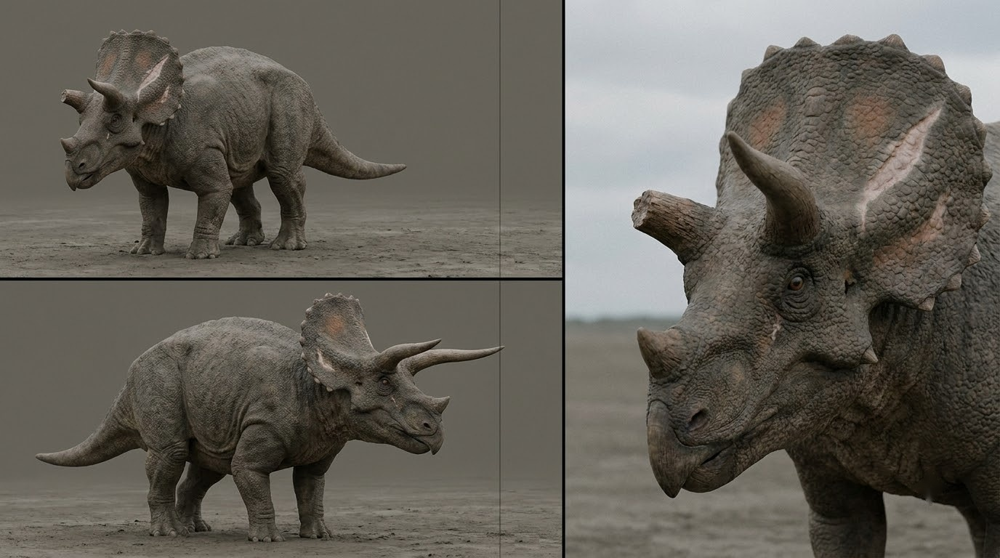
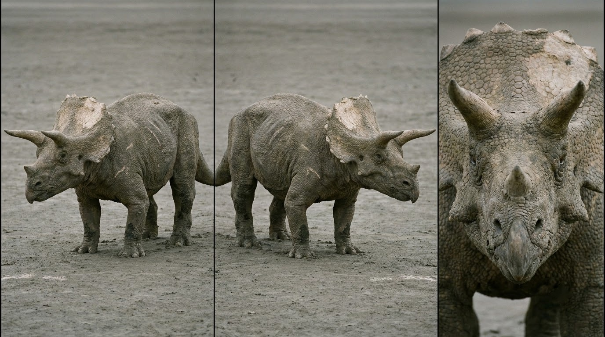
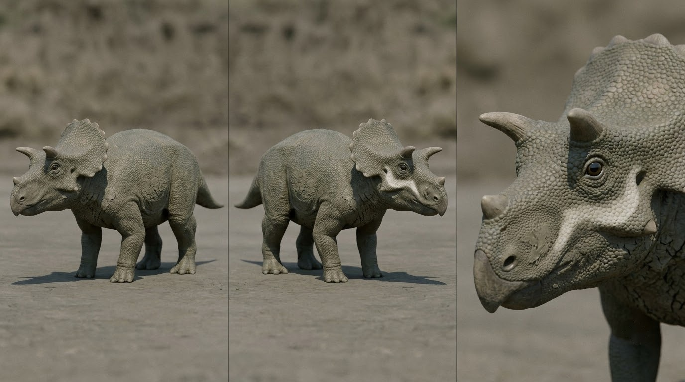
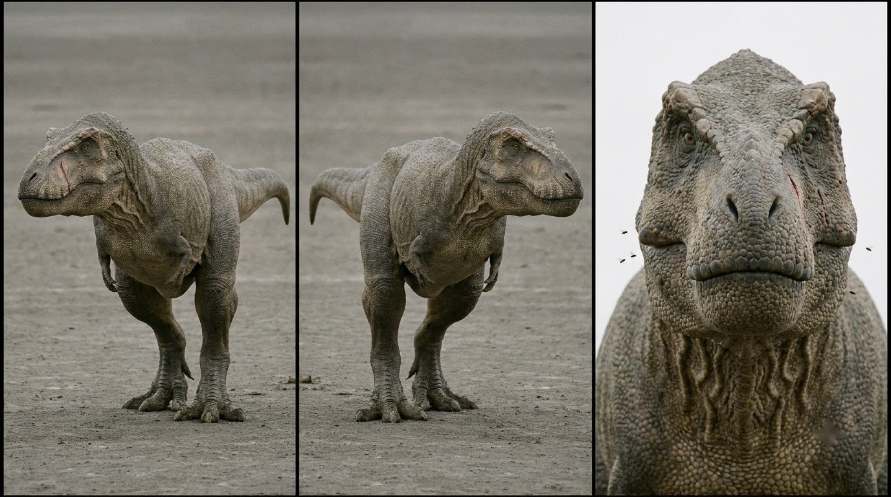
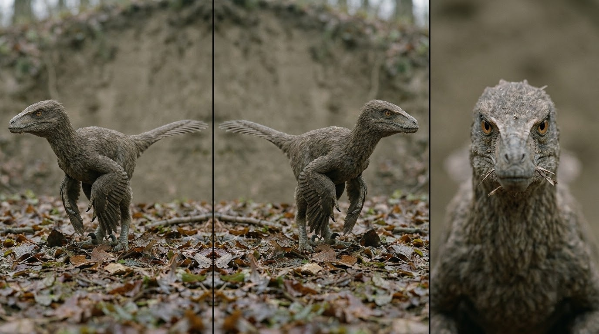
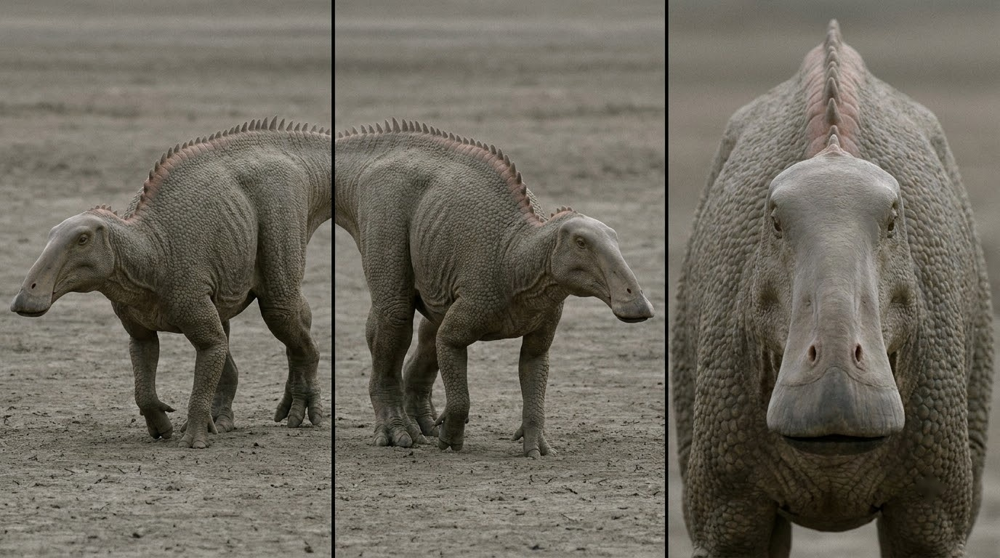
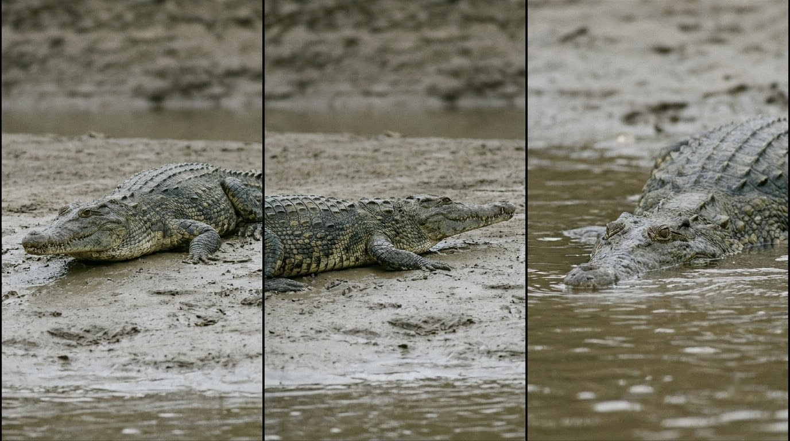
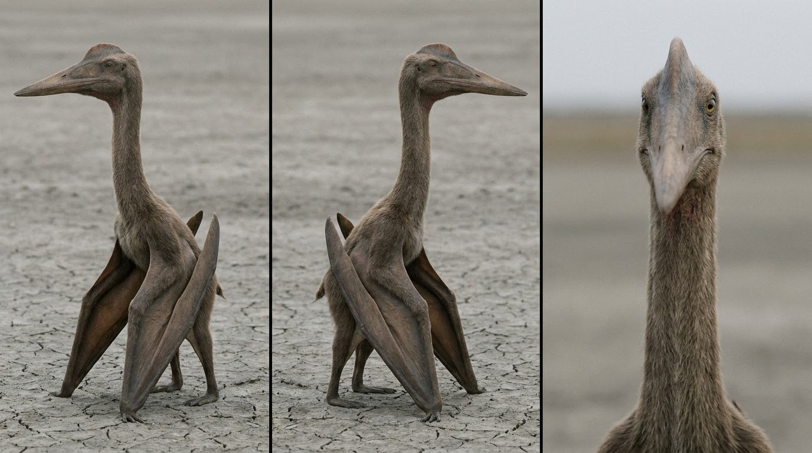

BD · Bò Đực COMPLETED

proportion: adult bull Triceratops horridus, about 8.5 m long, about 3 m tall at the hips, head with frill about 2.4 m long, four columnar legs, heavy barrel body, short thick tail
bone_face: broad square-tipped parrot beak; LEFT brow horn broken off to a 30 cm stump showing a rough fibrous keratin core; RIGHT brow horn intact, about 1 m, slightly curved forward; short blunt nose horn; solid bony frill with triangular epoccipital bumps along its edge
skin: rough non-reflective pachyderm hide like an African black rhinoceros: large matte polygonal basement scales on flanks and shoulders, scattered conical keratin tubercles 5 to 12 cm across the back and hips, deep wrinkles around the neck and armpits, grey-brown river silt dried and cracked on the lower legs and belly
permanent_marks: an old healed pale scar slashed horizontally across the LEFT half of the frill; the broken horn is on the LEFT side only and is never healed or regrown
forbidden_drift: never move the broken horn to the right side, never show both brow horns intact, never change the frill scar, no breath vapour, no glossy scales
CG · Con Cái Già COMPLETED

proportion: old female Triceratops horridus, about 7.5 m long, slightly smaller than the bull, visibly sway-backed with a dipped spine between shoulders and hips
bone_face: both brow horns intact but worn blunt and shorter, about 70 cm; narrower beak than the bull; frill edge chipped and notched in many places
skin: same matte pachyderm hide and polygonal scales, more wrinkled and loose at the neck, older pale scratches on the flanks
permanent_marks: frill faded to a pale washed-out grey-beige compared with the body; many chips along the frill edge; sway back
forbidden_drift: never a broken horn, never a vivid or patterned frill, never as tall as the bull
CN · Con Non COMPLETED

proportion: juvenile Triceratops about two years old, about 3 m long and about 1.2 m at the hips, head proportionally large, legs short and thick
bone_face: brow horns only short stubby nubs about 10 cm, curving slightly backwards as in young Triceratops; tiny nose horn bump; frill short with a soft rounded scalloped edge
skin: finer pebbly scales than the adults, smoother looking but matte, grey-olive mud dried on the belly and flanks
permanent_marks: a pale crescent patch on the right cheek below the eye
forbidden_drift: never long horns, never as large as an adult, never red mud
TR · T. rex COMPLETED

proportion: adult Tyrannosaurus rex about 12 m long, hips about 3.8 m high, horizontal body held level, massive deep skull, tiny two-fingered arms, thick muscular tail held off the ground
bone_face: deep broad skull, small forward-facing eyes under rough brow bosses, scaly lips covering the teeth when the mouth is closed
skin: fully scaly, no feathers: small pebbly scales over most of the body, larger matte scales on the snout and legs, deep folds at the neck
permanent_marks: a long healed vertical scar running down the LEFT side of the snout; flies around the mouth
forbidden_drift: never feathered, never upright tail-dragging pose, never running or galloping, no exposed crocodile teeth when the mouth is shut, no breath vapour
AR · Acheroraptor COMPLETED

proportion: coyote-sized dromaeosaurid, about 2.5 m long including the long stiff tail, hip-high to an adult human, lightly built
bone_face: long narrow snout, closed feathered lips, sharp amber eyes
skin: fully feathered in mottled brown-grey; long pennaceous feathers on the forearms folded like small wings; a fan of feathers at the tail tip; bare scaly feet
permanent_marks: a raised sickle claw on the second toe of each foot, held off the ground
forbidden_drift: never scaly-naked, never human-sized, never pack of more than two
ED · Edmontosaurus COMPLETED

proportion: adult Edmontosaurus annectens about 12 m long, long low body, walks on four legs, long tail held level
bone_face: long flat broad duck-like bill, smooth face with no horns and no frill
skin: mostly tiny pebbly scales, larger polygonal scales on the lower body and tail, thin skin wrinkled over the ribs
permanent_marks: a fleshy crest running along the neck and back that becomes a single row of spikes down the tail; hooves on the three hind toes and on the forefeet
forbidden_drift: never a bony head crest, never horns, never a frill
BS · Borealosuchus COMPLETED

proportion: crocodylian about 4 m long, low and flat
bone_face: long moderately narrow crocodile snout, raised eyes and nostrils on top of the head
skin: dark olive-grey armoured back with rows of raised bony scutes, paler belly, wet silt on the flanks
permanent_marks: two rows of raised scutes that read as a rough ridged back strip above the waterline
forbidden_drift: never a modern alligator with a very broad snout, never bright green
IN · Infernodrakon COMPLETED

proportion: azhdarchid pterosaur, wingspan about 5 m, standing on all fours on folded wings about the height of an adult human
bone_face: long stiff neck, long straight pointed toothless beak, modest low head crest
skin: short brown-grey fuzz (pycnofibres) over the body and neck, leathery wing membranes folded along the arms
permanent_marks: walks on the knuckles of its folded wings and on its hind feet, beak pointing down at the ground
forbidden_drift: never giraffe-tall, never a flock, never a dragon or bat